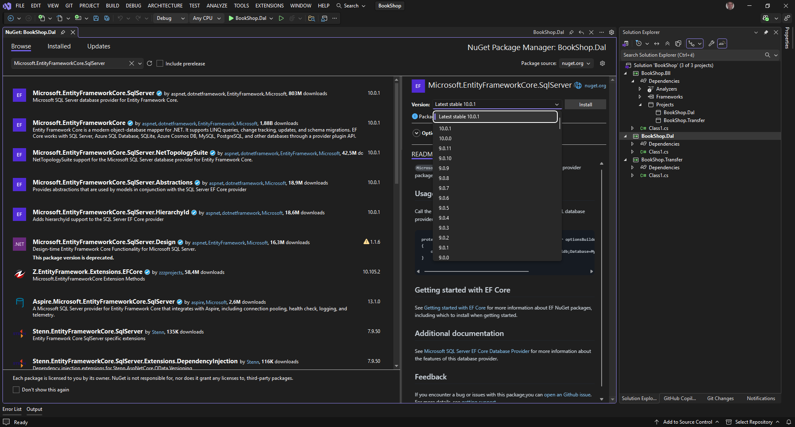

Project struktúra és adatmodell¶
Architektúra¶
Az alkalmazást klasszikus többrétegű architektúrában valósítjuk meg.
- UI: A felhasználói felültet magába foglaló réteg. Attól függ, hogy milyen technológiát választunk.
- ASP.NET MVC és Razor page esetén (szerver oldali renderelés) a kontrét HTML olalt jelenti.
- Blazor esetén (kliend oldali renderelés) a kliens oldali kódot jelenti, de ilyen esetben megjelenik egy Web API réteg is, amit HTTP-n keresztül a kliens tud hívni.
- Business Logic (Bll): Az alkalmazás üzleti logikai rétege. Ez a réteg kérdezi le EF segítségével az adatokat az adatbázisból és adja vissza a hívó rétegnek az adatokat miután DTO-kra konvertálta.
- Data Access (Dal): Az adatbázis Entity Framework rétegét tartalmazza. Itt találjatók az adatbázis entitások, a DbContext és migrációk.
Server oldali renderelés esetén¶
ASP.NET MVC vagy Razor Page esetén a szerver állítja elő a HTML tartalmat, amit a böngészőnek csak meg kell jeleníteni. Ilyen esetben kliens oldalon minimális JavaScript kód található.

Mint a fenti ábrán is látható, nincs érdemi Frontend kód, hiszen a kliens oldalra HTML kód kerül leküldésre, amit csak meg kell jeleníteni. A kliens oldali interációkhoz nincs sepiális támogatás, azt csak JavaScript segítségével tudjuk megvalósítani. Esetleg jQuery és jQuery UI-t tudunk még erre használni.
Kliens oldali renderelés esetén¶
Blazor Web Assembly esetén, a kód egy része (UI réteg) a kliensen fut így backend oldalon szükség van egy Web API rétegre, amit a kliens meg tud hívni az adatok letöltéséhez.
- Első oldal betöltéskor letöltődik az alkalmazás kódja a kliensre
- Ezt követően a kliens aszinkron kérésekkel tölti le a szükséges adatokat, amit aztán megjelenít a felületen.

Figyeljük meg, hogy a kliens és szerver jözött JSON-ban utaznak a DTO (Data Transfer Object) osztályok. Blazor esetén a kliens és szerver oldali kód is C#-ban készül így a DTO-kat magába foglaló Transfer projekre a kliens és a szerver is tartalmaz referenciát, tehát nincs szükség a szerver oldali DTO-k generálására kliens oldalon. (React és Angular esetén ez szükséges lenne, hiszen ott a kliens oldali programozási nyelv a JS / TS, így a DTO-kat is azon a nyelven kell megvalósítani.)
Közös backend rész kialakítása¶
Ahogy a fenti architektúra ábrákon is látszik mindkét megközelítés esetén a Business Logic és a Data Access réteg lehet közös, sőt a DTO-kat tartalmazó Transfer projekt is.
Ha az alkalmazásunk több projektből áll, akkor a projekteket egy ún. solution fogja össze, amely egy logikai egységet ad a projektek köré. Alapvetően a projekt egy egységnyi, egyértelmű kimenettel rendelkező kódhalmaz, például egy szerelvény (.exe, .dll saját függőségeivel) vagy website (.dll-ek, statikusan kiszolgálandó fájlok stb). Az egy solution-ben levő projektek tehát egy nagyobb probléma megoldásáért felelős nagyobb építőkockák.
Hozzunk létre a BookShop.Dal projektet. Ehhez válasszuk a File → New → Projekt / Solution opciót, majd a felugró ablakban adjuk meg a szükséges adatokat.
- Project típusa: Class Library
- Project neve: BookShop.Dal
- Solution neve: BookShop
- Framework: .NET 10


Ezt kövtően létrejön a Solution és benne a projekt is, ahogy azt a Solution Explorer ablakban láthatjuk.

Adjuk hozzá a solution-höz a BoohShop.Bll projektet is. Ehhez jobb gombbal kattintsunk a Solution-re, majd válasszuk az Add → New Project opciót, majd adjuk meg a projekt adatait.

A fentihez hasonló módon vegyük fel a BookShop.Transfer projektet is.
Adjuk referenciát a BookShop.Bll projektből a BookShop.Dal és BookShop.Transfer projektekre.

{kind=link}
{kind=link}
Data Access Layer megvalósítása¶
A projekt struktúra elkészítése után nekifoghatunk a legalsó réteg megvalósításához.
- A projekten vagy a projekt alatti Dependencies elemen jobb klikkelve a
Manage NuGet Packages...telepíthetünk NuGet csomagokat. - A Browse tabon adjuk meg a csomag nevét
Microsoft.EntityFrameworkCore.SqlServer, válasszuk ki a listából, ellenőrizzük a verziószámot, majd installáljuk a projekthez!  - A telepítés megkezdése eltt meg kell erősítenünk, hogy a szükséges módosításokat végrehajthatja és el kell fogadni a felhasználási feltételeket.
- Törölhetjük a kiinduláskor létrejött
Class1.csfájlt. -
Hozzunk létre egy
Entitiesmappát, benne aBook.csosztállyal! Ennek tartalma az alábbi:namespace BookShop.Dal.Entities; public class Book { public int Id { get; set; } public string Title { get; set; } = null!; public string Author { get; set; } = null!; public string? Subtitle { get; set; } public string? ShortDescription { get; set; } public decimal Price { get; set; } public decimal? DiscountedPrice { get; set; } public int PublishYear { get; set; } public int PageNumber { get; set; } } -
Figyeljük meg a fenti kódban az alábbiakat
- Nincs az osztályban külön using rész, mert csak olyan névtereket használunk amik globálisan using-olva vannak.
- A namespace után nincs kapcsoszárójel, hanem
;szerepel, így csökkentve a kódbehúzást. - A
TitleésAuthormezők nem lehetnek üresek, így a property végén szereplel az= null!Ha nem szerepelne ott a= null!warningot kapnánk rá, mert a projekten alapértelmezés szerint engedélyezve van a referencia szerinti null-ok kezelése. A projekt fájlban a<Nullable>enable</Nullable>sor engedélyezi. A null-forgiving operator (!) segítségével beállítjuk null-ra úgy, hogy ne szóljon érte a fordító. Navigation property-k esetén ez a javasolt megoldás. - Vagy készítsünk hozzá egy konstruktort, ami várja a Title-t és beállítja. Egyszerű property-k esetén ez a javasolt megoldás. De bizonyos estekben ez nehézséget okoz, mert nem tudjuk a default constructort használni, így általában a
null!-es megoldást szoktuk használni.
-
A fentihez hasonlóan hozzuk létre a
Category.csentitást is.namespace BookShop.Dal.Entities; public class Category { public int Id { get; set; } public string Name { get; set; } = null!; public string? Order { get; set; } public int? ParentCategoryId { get; set; } // Navigation properties public virtual Category? ParentCategory { get; set; } public virtual ICollection<Book> Books { get; set; } = []; public virtual ICollection<Category> ChildCategories { get; set; } = []; } -
Vegyünk fel a projekt gyökerébe egy
BookShopDbContext.csfájlt a lentebbi tartalommal!using BookShop.Dal.Entities; using Microsoft.EntityFrameworkCore; namespace BookShop.Dal; public class BookShopDbContext : DbContext { public BookShopDbContext(DbContextOptions options) : base(options) { } public DbSet<Book> Books { get; set; } public DbSet<Category> Categories { get; set; } } -
Ha kézzel hozzuk létre az osztályt, a
using-okat később szoktuk a kódba helyezni, amikor hivatkozás történik rájuk, ehhez aCtrl+.billentyűket vagy a bal oldali sárga villanykörtét tudjuk használni. -
A fenti kódot tuduk még törmörebben írni a
primary constructorhasználatával. Ehhez kattintsunk a sor elején található lámpa ikonra, vagy a konstruktor neve alatt lévő ... részre.
-
Így a fenti kódunk még tömörebb lett.
public class BookShopDbContext(DbContextOptions options) : DbContext(options) { public DbSet<Book> Books { get; set; } public DbSet<Category> Categories { get; set; } } -
Az osztály konstruktorában egy
DbContextOptionspéldányt vár, ami az adatbázis-kapcsolat konfigurációs beállításait (timeout, connection string) tartalmazza. Ezt később konfiguráljuk fel. Ez az osztály, és a benne találhatóDbSet<T>példányok megvalósítják az ún. repository mintát. A minta gyakorlatilag távoli objektumok proxy-zását, esetleges cache-elését valósítja meg a CRUD műveletek elérhetővé tételével. Az utóbbi időszakban egyre trendibb lett (sajnos) plusz egy repository réteg felépítése az EF réteg fölé, ezt a megközelítést erősen ellenjavalljuk (kódkarbantarthatósági, teljesítménybeli és architekturális okokból). EgyDbContextpéldányt használva mi magunk valósítjuk meg a Unit of work mintát, a példány létrejötte és az egyesSaveChangeshívások között egy egységnyi munka történik. ADbContextmegvalósítja azIDisposableinterfészt, tehát van sajátDisposemetódusa, mely az adatbázis kapcsolat bontásáért felelős. Ha nemDIsegítségével adjuk át a megfelelő példányt hanem kézzel hozzuk létre (ami nem javasolt), akkor mindigusingvagytry-(catch-)finallyblokkban használjuk aDbContextpéldányokat, mert így garantálható csak a drága adatbáziskapcsolatok megszüntetése, amikor már nincsen rájuk tovább szükség! -
A séma megadásához Code First megközelítést használunk (tehát a DB modelljét .NET kódban adjuk meg), az adatbázis sémájának karbantartásához pedig a keretrendszer által támogatott ún. migrációkat használunk.
- Ahhoz, hogy a migrációkat létre tudjuk hozni induló projket nélkül szükséges egy
IDesignTimeDbContextFactoryimplementálása. - Készítsük el a
BookShop.Dalprojektben a sajátIDesignTimeDbContextFactoryimplementációnkat. Ez az ideiglenes megoldás arra jó, hogy ki tudjuk próbálni a migrációt, a nélkül hogy további rétegeket vennénk fel. -
Hozzuk létre a
BookShopDbContextFactoryosztályt az alábbi implementációval.using Microsoft.EntityFrameworkCore; using Microsoft.EntityFrameworkCore.Design; namespace BookShop.Dal; internal class BookShopDbContextFactory : IDesignTimeDbContextFactory<BookShopDbContext> { public BookShopDbContext CreateDbContext(string[] args) { var optionsBuilder = new DbContextOptionsBuilder<BookShopDbContext>(); optionsBuilder.UseSqlServer("Data Source=.;Initial Catalog=BookShopDb;Integrated Security=True;TrustServerCertificate=True"); return new BookShopDbContext(optionsBuilder.Options); } } -
Figyeljük meg, hogy az osztály
internalhiszen nem szeretnénk máshonnan elérni. Ezen felül ennek a megoldásnak a hátrányát is vegyük észre, hiszen itt az adatbázis kapcsolódási sztringet bele kellett írni a kódba, nem konfigurációból olvassuk fel! Ezen felül az SQL kapcsolódái sztringben szerepel egyTrustServerCertificate=Trueami azt jelzi, hogy a szerver SSL tanúsítványát fogadja el akkor is, ha az nem érvényes. -
A migráció automatizált létrehozására két lehetőségünk van:
PowerShellvagy a platform független.NET Core CLI(Command Line Interface), ami adotnet efparancs (ezt érdemes global package-ként telepíteni, ha ezt szeretnénk használni). Számunkra egyszerűbb most az első megoldás, ezért nyissuk meg aPackage Manager Console-t (View → Other Windows → Package Manager Console), és adjuk ki az alábbi parancsot (közben ügyeljünk, hogy a Default projekt aBookShop.Dallegyen!):Ahhoz, hogy ki tudjuk adni az Add-Migration parancsot, fel kell telepíteni a
Microsoft.EntityFrameworkCore.Toolsnuget packaget a DAL projekthez -
A
Package Manager Console-ból adjuk ki a parancsot, ami legenerálja a kezdeti migrációt. Figyeljünk arra, hogy a Default project aBookShop.Dallegyen. Az átadottInitialparaméter egy szabadszöveges sting, mely a migrációnk nevét adja. Ez tehát a kiinduló (initial) migrációnk.Add-Migration Initial -
Nézzük meg a solution explorer ablakban, hogy létrejöttek a migrációk.

A migrációs fájlokban (pl.:
Datum_Initial.cs) jól értelmezhető, generált kódot találunk, amelyekben szükség esetén akár módosításokat is végezhetünk, és bár ez általánosságban nem jellemző, mindenképp tudni illik, mert előfordul, hogy kézi módosítást kell végeznünk ezekben a fájlokban. Ez építi fel a migrációhoz szükséges SQL parancsokat az alkalmazáshoz, tehát definiálja a sémát: táblákat, kulcsokat, megkötéseket stb.
-
Futtassuk le a migrációt, hogy létrejöjjön az adatbázis is.
Update-Database
-
Ezután megvizsgálhatjuk SQL Server Object Explorerben a létrejött sémát is.
Érdemes észrevennünk, hogy az
Idoszlophoz automatikusan DB-generált kulcs jön létre, pedig ezt nem fogalmaztuk meg sehol. Az EF konvenciókat használ nagyon sok sémával kapcsolatos művelethez, ilyen például az elsődleges kulcs kényszer is, amivel, ha egy entitásban egyintvagyGuidtípusú,ID,Idvagy<Típus>Idnevű mezőt hozunk létre, az automatikus kulcsa lesz az adott táblának. 23. A migrációban láthatjuk, hogy egyUp()és egyDown()metódus kerül definiálásra. AzUp()metódusok lefuttatásával a keretrendszer olyan SQL kódot generál, amelyet egy korábbi (tehát üres) adatbázison lefuttatva a migráció állapotának megfelelő sémát hoz létre. ADown()futtatásával a korábbi állapotra tudunk visszaállni. Figyeljük meg, hogy az adatbázisban is beállítja aBook.cs-ben megadott property-k típusa alapján, hogy az adott mező lehet-e null.- A PublishYear típusa int így az kötelező mező, nem lehet null az értéke
- A DiscountedPrice típusa decimal? ami viszont lehet null, ezért az adatbázis táblában is nullable-ként jön létre.
- A Title string típusú és az adatbázisban not null-ként jön létre. De miért? A string lehet null. Vagy mégsem? Attól függ, hogy a Nullable reference type-okat használjuk vagy sem. A generált projekt alapértelmezés szerint használja, tehát a string nem lehet null. Ha meg szeretnénk engedni, hogy a sztring lehessen null, akkor string? -et kell használni, ahogy használtuk is a
Book.cs-ben
{kind=link}
{kind=link}
{kind=link}
{kind=link}
Adatbázis model diagram készítése¶
- A későbbiekben a fejlesztést nagy mértékben segíti, ha az adatmodellről van egy diagramunk. Ezt úgy tudjuk létrehozni, hogy a
BoohShop.Dal/Entiteskönyvráthoz hozzáadunk egy újClass Diagramtípusú elemet.

- Ezt követően húzzuk rá a diagramra a
BookésCategoryentitásokat. Azonban ez még kevés, mert szeretnénk a "táblák" (valójában entitások) közötti kapcsolatokat is látni. Ehhez kattintunk jobb gombbal aCategoryentitésChildCategoriestulajdonságára, majd válasszuk aShow as Collection Association-t, hiszen egy egy lista. Ha nem lista lenne akkor aShow as Assiciationa megfelelő választás.

- Állítsuk be a
ParentCategory-ra és aBooks-ra is, hogy kapcsolatként mutassa.

- Így már van egy folyamatosan frissülő diagramunk a kódban, ahol áttekinthetjük a EF modellünket.
Kezdeti adatfeltöltés¶
- Az alkalmazás kezdeti, ún. ősadatokkal történő feltöltését (seed) a keretrendszer segítségével oldjuk meg.
Ősadatokat a
DbContext.OnModelCreatingmetódusának felüldefiniálásával, és aModelBuilderfluent API használatával tudunk az alkalmazáshoz felvenni. Ehhez override-olnunk kell a megfelelő metódust aBookShopDbContext-ben
public class BookShopDbContext(DbContextOptions options) : DbContext(options)
{
public DbSet<Book> Books { get; set; }
public DbSet<Category> Categories { get; set; }
protected override void OnModelCreating(ModelBuilder modelBuilder) {
modelBuilder.Entity<Book>().HasData(new Book { Id = 1, Title = "Teszt könyv", ... });
}
}
-
Fontos megemlíteni, hogy a fenti példához hasonlóan a HasData API-n keresztül mindig kötelező kitölteni az entitások elsődleges kulcsait! Ez azért lehet szokatlan, mert mesterséges kulcsok esetén (mint a
Bookesetében is) alapvetően az adatbázis feladata megadni egy elem ID-ját, ezért más helyen azId-t az alapértelmezett0értéken fogjuk hagyni az üzleti logikában létrehozáskor, azt az adatbázis fogja kitölteni szekvencia alapján. Most azért kell megadnunk az ID-kat, mert ezek a kódban definiált entitások valójában úgy kezelendők, mintha az adatbázisban lennének megtalálhatók, tehát minden tulajdonságukat előre számítottuk és fixnek, determinisztikusnak kell lenniük. Ha nem determinisztikusak ezek az értékek, minden migráció generálásakor újra és újra be fognak szúródni az adatbázisba az entitások vagy hibára fogunk futni. Röviden tehát itt beégetett ID-kat kell használnunk. A fenti API használatával nem csak ősadatokat, hanem egyéb metaadat-szintű konfigurációt is megadhatunk, például adattáblák nevét, oszlopok egyediségét, indexeket stb. Ezt az API-t a későbbiekben, a végleges adatmodell készítésekor fogjuk alaposabban megvizsgálni. -
Töltsünk fel egy pár kezdeti könyvet az alábbi kóddal
public class BookShopDbContext(DbContextOptions options) : DbContext(options)
{
public DbSet<Book> Books { get; set; }
protected override void OnModelCreating(ModelBuilder modelBuilder)
{
modelBuilder.Entity<Category>().HasData(
new Category { Id = 1, Name = "Ezoterika", ParentCategoryId = null, Order = "00" },
new Category { Id = 2, Name = "Feng shui", ParentCategoryId = 1, Order = "00.01" },
new Category { Id = 3, Name = "Horoszkóp, asztrológia", ParentCategoryId = 1, Order = "00.02" },
new Category { Id = 4, Name = "Parapszichológia", ParentCategoryId = 1, Order = "00.03" },
new Category { Id = 5, Name = "Irodalom", ParentCategoryId = null, Order = "01" },
new Category { Id = 6, Name = "Életrajz", ParentCategoryId = 5, Order = "01.01" },
new Category { Id = 7, Name = "Dráma, színmű", ParentCategoryId = 5, Order = "01.02" },
new Category { Id = 8, Name = "Vers, eposz", ParentCategoryId = 5, Order = "01.03" },
new Category { Id = 9, Name = "Tankönyvek", ParentCategoryId = null, Order = "02" },
new Category { Id = 10, Name = "Matematika", ParentCategoryId = null, Order = "02.01" },
new Category { Id = 11, Name = "Kémia", ParentCategoryId = null, Order = "02.02" },
new Category { Id = 12, Name = "Közgazdaságtudomány", ParentCategoryId = null, Order = "02.03" },
new Category { Id = 13, Name = "Biológia", ParentCategoryId = null, Order = "02.04" },
new Category { Id = 14, Name = "Regény", ParentCategoryId = null, Order = "03" },
new Category { Id = 15, Name = "Családregény", ParentCategoryId = 14, Order = "03.01" },
new Category { Id = 16, Name = "Fantasy", ParentCategoryId = 14, Order = "03.02" },
new Category { Id = 17, Name = "Erotikus", ParentCategoryId = 14, Order = "03.03" },
new Category { Id = 18, Name = "Krimi", ParentCategoryId = 14, Order = "03.04" },
new Category { Id = 19, Name = "Sci - fi", ParentCategoryId = 14, Order = "03.05" },
new Category { Id = 20, Name = "Thriller", ParentCategoryId = 14, Order = "03.06" },
new Category { Id = 21, Name = "Történelmi", ParentCategoryId = 14, Order = "03.07" }
);
modelBuilder.Entity<Book>().HasData(
new Book()
{
Id = 1,
Title = "A személyes feng shui tanácsadó",
Author = "Lam Kam Chuen Mester",
Subtitle = "Hogyan éljünk egészségesen és harmonikusan",
PageNumber = 168,
Price = 3200,
PublishYear = 2004,
ShortDescription = "A Személyes feng shui tanácsadó elmagyarázza a feng shui alapelveit...",
},
new Book()
{
Id = 2,
Title = "Az én feng shui-kertem",
Author = "Susanne Schumacher",
Subtitle = "Ötletek kertekhez, teraszokhoz, erkélyekhez",
PageNumber = 128,
Price = 4900,
PublishYear = 2008,
ShortDescription = "Képzelje azt, hogy kertje egy ruhadarab....",
},
new Book()
{
Id = 3,
Title = "Feng Shui",
Author = "Ernest J. Eitel",
Subtitle = "A természet és az egyensúly kínai tudományával kapcsolatos alapvető tudnivalók",
PageNumber = 80,
Price = 699,
PublishYear = 2012,
ShortDescription = "Az ember, az ember által létrehozott környezet...",
}
);
}
}
- Most, hogy elkészültünk az ősadatokkal, újabb migrációt kell készítenünk, ami az adatok betöltéséért lesz felelős. Szintén a
Package Manager Console-ban adjuk ki az alábbi parancsot, ügyelve arra, hogy aBookshop.Dalprojekt legyen kiválasztva:
Add-Migration InitialSeed
Ha mindent jól csináltunk így fog kinézni a migrációnk.

- Futtassuk is le a migrációt
Update-Database
Az adatbázisba is bekerülnek az adatok.

- Figyeljük meg, hogy bár a
Book.cs-ben nem vettük felCategoryIdtulajdonságot, mégis az adatbázisba létrejött egy ilyen osztlop. Ez azért van, mert aCategory.cs-ben felvettünk egy navigációs tulajdonságot aBookslistát, ami egy egy-többes kapcsolat a kategória és a könyv között így az EF automatikusan létrehozza az adatbázisban a szükséges mezőt.

- Azért, hogy az EF modellben is látható legyen ez a kapcsolat érdemes a modellt kibővíteni ezzel a tulajdonsággal és a navigációt tulajdonságot a másik irányba is felvenni. Mivel most nem szeretnénk mindenhol kitölteni ezt az értéket ezért nullable-nek vesszük fel.
public class Book
{
public int Id { get; set; }
public string Title { get; set; } = null!;
public string Author { get; set; } = null!;
public string? Subtitle { get; set; }
public string? ShortDescription { get; set; }
public decimal Price { get; set; }
public decimal? DiscountedPrice { get; set; }
public int PublishYear { get; set; }
public int PageNumber { get; set; }
public int? CategoryId { get; set; }
public Category? Category { get; set; }
}
- Illetve a DbDiagram-ot is érdemes beállítani ezt a kapcsolatot. A tulajdonság már ott lesz, hiszen a modellbe bekerlült. Általánosságban elmondható, hogy a navigációs tulajdonságoknál érdemes mind a két irányt felvenni.

BoohShop.Transfer - DTO-k készítése¶
Az adatbázis entitások már megvannak, viszont nem szeretnénk, hogy a kliens oldalra, vagy a webes felületre entitások jussanak el, ezért a Transfer projektben hozzuk létre azokat a DTO osztályokat, amit majd a Webes projekt / kliens használni fog. A DTO-k elnevezésénél nem érdemes a DTO postfixet használni. Erről beszédesebb az alábbi konvenció
- Header: Csak alapadatokat tartalmaz, nem hivatkozik más DTO-ra
- Data: A fontosabb adatokat tartalmazza, hivatkozhat más DTO-ra is.
-
Details: Minden vagy a szerkesztéshez szükséges adatokat tartalmazza.
-
Hozzunk létre egy
BookData.csosztályt az alábbi tartalommal.
namespace BookShop.Transfer;
public class BookData
{
public int Id { get; set; }
public string Title { get; set; } = null!;
public string Author { get; set; } = null!;
public string? Subtitle { get; set; }
public string? ShortDescription { get; set; }
public decimal Price { get; set; }
public decimal? DiscountPrice { get; set; }
public int PublishYear { get; set; }
public int PageNumber { get; set; }
public int? CategoryId { get; set; }
}
- Hozzuk létre hasonlóan a
CategoryHeaderosztályt is.
namespace BookShop.Transfer;
public class CategoryHeader
{
public int Id { get; set; }
public string Name { get; set; } = null!;
public int Level { get; set; }
}
- Ez után már csak annyi feladatunk van, hogy a Bll-ben elkészítjük az adatbázis lekérdezéseket, amik DTO-kat adnak vissza.
Bll service-ek megvalósítása¶
A BLL-ben valósítjuk meg azokat a szolgáltatásokat és hozzá tartozó interfészeket, amivel adatokat tudunk lekérdezni az adatbázisból, illetve itt valósítjuk meg az entitás → DTO mappinget is.
- Hozzunk létre a
BookShop.Bllprojektben egyIServicesés egyServicesmappát. - Vegyük fel az
IServicesmappában azIBookService.csfájlt, amiben definiálunk egyGetBooksAsny()metódust, ami majd visszaadja az összes könyvet egy listában.
using BookShop.Transfer;
namespace BookShop.Bll.IServices;
public interface IBookService
{
Task<List<BookData>> GetBooksAsync();
}
- Vegyük fel az
IServicesmappában azICatalogService.csfájlt, amiben definiálunk egyGetCategoryTreeAsync()metódust, ami majd visszaadja az összes kategóriát egy listában.
using BookShop.Transfer;
namespace BookShop.Bll.IServices;
public interface ICategoryService
{
Task<IEnumerable<CategoryHeader>> GetCategoryTreeAsync();
}
- Készísük is el az
IBookServiceinterfész implentációját is, amit aServicesmappában tegyünkBookServicenévvel. A metódus cím szerint sorbarendezbe kell, hogy visszaadjon aBookDatalistát. Az alábbiakban látható hozzá az implementáció.
using BookShop.Bll.IServices;
using BookShop.Dal;
using BookShop.Transfer;
using Microsoft.EntityFrameworkCore;
namespace BookShop.Bll.Services;
public class BookService(BookShopDbContext dbContext) : IBookService
{
private readonly BookShopDbContext dbContext = dbContext;
public async Task<List<BookData>> GetBooksAsync()
{
var books = await dbContext.Books
.OrderBy(x => x.Title)
.Select(b => new BookData()
{
Id = b.Id,
Title = b.Title,
Subtitle = b.Subtitle,
ShortDescription = b.ShortDescription,
Price = b.Price,
DiscountPrice = b.DiscountedPrice,
PublishYear = b.PublishYear,
PageNumber = b.PageNumber,
Author = b.Author,
CategoryId = b.CategoryId,
}).ToListAsync();
return books;
}
}
- Készísük is el az
ICategoryServiceinterfész implentációját isCategoryServicenévvel. Az összes kategóriát vissza kell adniOrderszerint rendezve. ALevel-t úgy tudjuk meghatározni, hogy azOrder-ben hány darab pont szerepel. Az alábbiakban látható hozzá az implementáció.
using BookShop.Bll.IServices;
using BookShop.Dal;
using BookShop.Transfer;
using Microsoft.EntityFrameworkCore;
namespace BookShop.Bll.Services;
public class CategoryService(BookShopDbContext dbContext) : ICategoryService
{
private readonly BookShopDbContext _dbContext = dbContext;
public async Task<IEnumerable<CategoryHeader>> GetCategoryTreeAsync()
{
var allCategories = await _dbContext.Categories
.OrderBy(c => c.Order)
.Select(c => new CategoryHeader()
{
Id = c.Id,
Name = c.Name,
Level = c.Order != null
? c.Order.Split(".", StringSplitOptions.None).Length
: 0,
})
.ToListAsync();
return allCategories;
}
}
Automapper¶
Ahogy a fenti kódban látható most egy egyes Service-ekben található az entitás -> DTO mappelés, ami működő megoldás, viszont nem lehet újrahasznosítani a mappeléseket. A gyakorlatban az Automapper csomag segítségével lehet ezeket a mappeléseket kiszervezni egy közös részbe. Regisztráció után lehet ingyenes licensz kulcsot igényelni, ami 1 évig érvényes. Lejárat után ingyenesen meghosszabítható. Csak nagyvállalatoknak kell fizetni érte részeletek az árazás oldalon. A licensz kulcs a Profil oldalról tölthető le.
- A
BookShop.Bllprojekthez vegyük fel azAutoMapperNuGet package-et. - Vegyünk fel egy
Mappingskönyvtárat, ahova az Automapper profile-ok kerülnek majd. - Készítsük el a
CategoryProfileosztályt, ami aAutoMapper.Profileosztályból származik és a konstruktorában hozzunk létre egy mappinget. A mappinget az alábbi két módon hozhatjuk létre: CreateMap<Entity, Dto>: HasználhatóProjectTometódussal és, aMap-pal is. AMapolyan mappelést tesz lehetőve, ahol a kód nem fordul SQL-re, tehát egy tetszőleges listát is át tudunk a memóriában Mappelni. Csak akkor érdemes aCreateMap<Entity, Dto>használata, ha memóriában is szeretnénk mappelni.CreateProjecton<Entity, Dto>: Csak aProjectTometódussal használható, aMap-pel nem, cserébe gyorsabb. Általában ezt szoktuk használni, hiszne aProjectToteszi lehetővé, hogy az adatbázisból csak azt kérdezzük le, amire szükségünk van.
using AutoMapper;
using BookShop.Dal.Entities;
using BookShop.Transfer;
namespace BookShop.Bll.Mappings;
public class CategoryProfile : Profile
{
public CategoryProfile()
{
CreateProjection<Category, CategoryHeader>()
.ForMember(dest => dest.Id, opt => opt.MapFrom(src => src.Id))
.ForMember(dest => dest.Name, opt => opt.MapFrom(src => src.Name))
.ForMember(dest => dest.Level, opt => opt.MapFrom(src => src.Order != null ? src.Order.Split (".", StringSplitOptions.None).Length : 0));
}
}
-
Ahogy a fenti kódban is látszódik minden tulajdonságot mappelünk. Ezt nem kötelező, mert az AutoMapper az azonos nevű tulajdonságokat automatikusan mappeli. Azonban ha a kódot refaktoráljuk, akkor a mappelés eltörhet. Gondoljuk végig, hogy a DTO-ban átnevezünk egy tulajdonságot és mindehol ahol előfordul ott is átnevezésre kerül automatikusan. Viszont mivel a mappingben nem szerepel az adott tulajdonság, mert konvenció alapján mappeli az AztoMapper és az átnevezés után már nem is egyezik meg a DTO-ban és az entitáson a tulajdonság el fog törni a kód.
-
A fentihez hasonló módon készítsük el a
BookProfileosztályt is.
using AutoMapper;
using BookShop.Dal.Entities;
using BookShop.Transfer;
namespace BookShop.Bll.Mappings;
public class BookProfile : Profile
{
public BookProfile()
{
CreateProjection<Book, BookData>()
.ForMember(dest => dest.Id, opt => opt.MapFrom(src => src.Id))
.ForMember(dest => dest.Title, opt => opt.MapFrom(src => src.Title))
.ForMember(dest => dest.Subtitle, opt => opt.MapFrom(src => src.Subtitle))
.ForMember(dest => dest.ShortDescription, opt => opt.MapFrom(src => src.ShortDescription))
.ForMember(dest => dest.Price, opt => opt.MapFrom(src => src.Price))
.ForMember(dest => dest.DiscountPrice, opt => opt.MapFrom(src => src.DiscountedPrice))
.ForMember(dest => dest.PublishYear, opt => opt.MapFrom(src => src.PublishYear))
.ForMember(dest => dest.PageNumber, opt => opt.MapFrom(src => src.PageNumber))
.ForMember(dest => dest.Author, opt => opt.MapFrom(src => src.Author))
.ForMember(dest => dest.CategoryId, opt => opt.MapFrom(src => src.CategoryId));
}
}
- A fenti kód elkészítésében a Code Completions a Visual Studióban sokat tud segíteni, akár a teljes kódot helyesen fel tudja ajánlani. Ez az opció akkor érhető el ha van GitHub Copilot előfizetés.

-
Ha megvannak a mapper profilok, akkor már csak annyi dolgunk van, hogy a service-ekben lecseréljük a
Select-et egyProjectTo-ra. Mivel aProjectTo<DTO>()vár egyIConfigurationProviderparamétert is, a szolgáltatás konstruktorának át kell adni egyIMapper-t, amit majd a DI konténerbe be kell regisztrálni. Ez a regisztrációt majd a Console Application-ben fogjuk megtenni. -
Módosítjuk a
CategoryService-t, hogy aProjectTo-t használja.
public class CategoryService(BookShopDbContext dbContext, IMapper mapper) : ICategoryService
{
private readonly BookShopDbContext _dbContext = dbContext;
public async Task<IEnumerable<CategoryHeader>> GetCategoryTreeAsync()
{
var allCategories = await _dbContext.Categories
.OrderBy(c => c.Order)
.ProjectTo<CategoryHeader>(mapper.ConfigurationProvider)
.ToListAsync();
return allCategories;
}
}
- Módosítjuk a
BookService-t is, hogy aProjectTo-t használja.
public class BookService(BookShopDbContext dbContext, IMapper mapper) : IBookService
{
private readonly BookShopDbContext dbContext = dbContext;
public async Task<List<BookData>> GetBooksAsync()
{
var books = await dbContext.Books
.OrderBy(x => x.Title)
.ProjectTo<BookData>(mapper.ConfigurationProvider)
.ToListAsync();
return books;
}
}
- Ezt most nem tudjuk még kipróbálni, mert nincs futtatható projektünk. Ezért a következő lépésben egy egyszerű Console App-ot adunk a solution-höz, hogy el is tudjuk indítani az alkalmazást.
Console App létrehozása mint UI réteg¶
- Adjunk a solution-hoz egy Console App-ot
BookShop.ConsoleAppnévvel. - Adjunk referenciát a
BookShop.Bllprojektre. - Ahhoz, hogy be tudujuk regisztrálni az AutoMappert és az adatbázis contextust a
Program.csfájlt ki kell egészíteni, mert alapértelmezés szerint nincs benne olyan kódrészlet ami appsettings.json-t fel tudná olvasni, illetve DI containere sincs. - Adjuk hozzá a
BookShop.ConsoleAppprojekthez aMicrosoft.Extensions.HostingNuGet package-et. Ezzel tudunk majd létrehozni egyHostApplicationBuilder-t, amibe be tudjuk regisztrálni a szolgáltatásainkat és kezelni tudja azappsetting.jsonfájlt. - Adjunk a projekthez egy új JSON típusú fájlt
appsettings.jsonnévvel, majd állítsuk be a fájl tulajdonságai között (appsetting.json jobb klikk → Properties), hogy ha módosul másolja át az output könyvtárba - Copy To Output Directory: Copy if newer.

 6. Adjuk hozzá az alábbi tartalmat az
6. Adjuk hozzá az alábbi tartalmat az appsettings.json fájlhoz. A LicenseKey-hez azt az AutoMapper-től kapott licensz kulcsot kell bemásolni.
{
"ConnectionStrings": {
"DefaultConnection": "Data Source=.;Initial Catalog=BookShopDb;Integrated Security=True; TrustServerCertificate=True"
},
"AutoMapper": {
"LicenseKey": "Ide jön a licenszkulcs"
}
}
- Készítsük el a
Program.cskódját is. - Hozzuk létre a HostApplicationBuilder példányunkat a
Host.CreateApplicationBuildersegítségével. Ez fel fogja olvasni az appsetting.json fájunkban lévő adatokat. - Regisztráljuk be az alábbi szolgáltatásokat
- DbContext-et.
- AutoMapper profileokat és a licensz kulcsot is adjuk meg.
- Bll szolgáltatásokat (BookService, CategoryService)
- Majd indítsuk is el az alkalmazást, hogy addig fusson amíg nem nyomjuk le a
Ctrl + C-t.
using BookShop.Bll.IServices;
using BookShop.Bll.Mappings;
using BookShop.Bll.Services;
using Microsoft.EntityFrameworkCore;
using Microsoft.Extensions.Configuration;
using Microsoft.Extensions.DependencyInjection;
using Microsoft.Extensions.Hosting;
Console.WriteLine("Application starting...");
var builder = Host.CreateApplicationBuilder(args);
// DB Context regisztrálása a DI containerbe.
builder.Services.AddDbContext<BookShop.Dal.BookShopDbContext>(options =>
{
options.UseSqlServer(builder.Configuration.GetConnectionString("DefaultConnection"));
});
// AutoMapper regisztrálása a DI containerbe.
builder.Services.AddAutoMapper(
cfg =>
{
cfg.LicenseKey = builder.Configuration.GetRequiredSection("AutoMapper").GetValue<string> ("LicenseKey");
}, typeof(BookProfile));
// Szolgáltatások regisztrálása a DI containerbe.
builder.Services.AddScoped<IBookService, BookService>();
builder.Services.AddScoped<ICategoryService, CategoryService>();
// Host fordítása. (Ez után lehet lekérdezni a beregisztált szolgáltatásokat)
var app = builder.Build();
app.Services.GetRequiredService<BookShop.Dal.BookShopDbContext>().Database.Migrate();
// TODO: Ide tudjuk majd írni a tesztelendő kódot.
await app.RunAsync();
- Figyeljük meg a fenti kódban, hogy a végén meghívjuk az adatbázis migrációt. Ha ez a sor benne marad a kódban, akkor nem kell sohasem futtatni az
Update-Databaseparancsot, mert ez a kódsor le fogja futtatni azokat a migrációkat, amik még nem futottak. Érdemes azonban megjegyezni, hogy Production környezetben nem szeretjük ezt az automatikus megoldást, mert általában a migrációk lefuttatásához magasabb jogosultság szükséges mint az alkalmazás normál futtatásához. - Ha elindítjuk az alkalmazást azt fogjuk látni, hogy valóban ellenőrzni, hogy minden EF migráció lefutott-e, ezt a konzolra naplózott SQL logokból láthatjuk.
-
Ahhoz, hogy a mi kódunkat is le tudjuk tesztelni egyszerűen, hozzunk létre egy
TestMyCodeosztályt, melynek konstruktora megkapja azIBookServiceésICategoryServiceinterfészeket és impelmentál két metóudstListBooksAsyncésListCategoriesAsyncmelyek meghívják az egyes szolgáltatások megfelelő metódusát és a konzolra kiírják a visszakapott listák elemet.using BookShop.Bll.IServices; namespace BookShop.ConsoleApp; public class TestMyCode(IBookService bookService, ICategoryService categoryService) { public async Task ListBooksAsync() { var books = await bookService.GetBooksAsync(); foreach (var book in books) { Console.WriteLine($"{book.Id}: {book.Title} - {book.Author} ({book.PublishYear})"); } } public async Task ListCategoriesAsync() { var categories = await categoryService.GetCategoryTreeAsync(); foreach (var category in categories) { Console.WriteLine($"{new string(' ', (category.Level - 1) * 2)}- {category.Name} (Level: {category.Level})"); } } } -
Már csak annyi dolgunk van, hogy a
Program.cs-ből meghívjuk a két metódust, viszont mivel manuálisan nem tudjuk ezt az osztály példányosítani, így ezt is hozzá kell adni a Services-hez és onnan kell a példányt elkérni.// Szolgáltatások regisztrálása a DI containerbe. builder.Services.AddScoped<IBookService, BookService>(); builder.Services.AddScoped<ICategoryService, CategoryService>(); builder.Services.AddScoped<TestMyCode>(); // Host fordítása var app = builder.Build(); app.Services.GetRequiredService<BookShop.Dal.BookShopDbContext>().Database.Migrate(); var testMyCodeService = app.Services.GetRequiredService<TestMyCode>(); await testMyCodeService.ListBooksAsync(); await testMyCodeService.ListCategoriesAsync(); await app.RunAsync(); -
Ha így elindítjuk az alkalmazást, akkor látható lesz, hogy tényleg megkapjuk az adatokat az adatbázisból, sőt a futtatot SQL kódot is látjuk.
Teljes DAL réteg¶
Ezek alapján már el tudnánk készíteni a teljes adatelérési réteget, de miven az sok időt vesz igénybe ezért az a következő labor kiinduló anyagába már benne lesz.